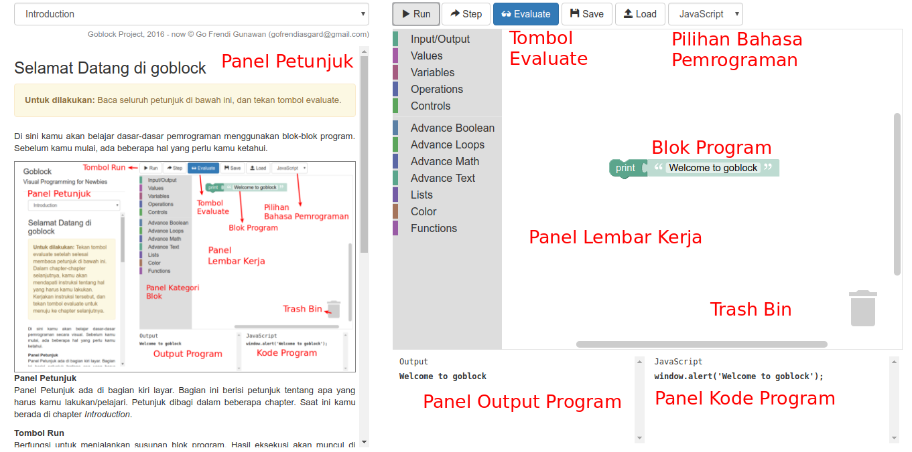

Di sini kamu akan belajar dasar-dasar pemrograman menggunakan blok-blok program. Sebelum kamu mulai, ada beberapa hal yang perlu kamu ketahui.
Panel Petunjuk ada di bagian kiri layar. Bagian ini berisi petunjuk tentang apa yang harus kamu lakukan/pelajari. Petunjuk dibagi dalam beberapa chapter. Saat ini kamu berada di chapter Introduction.
Berfungsi untuk menjalankan susunan blok program. Hasil eksekusi akan muncul di bagian Output Program. Sementara kode program yang terbentuk berdasarkan blok-blok yang kamu susun akan muncul di bagian Kode Program
Berfungsi untuk melihat eksekusi blok-blok program secara bertahap. Dengan memanfaatkan tombol ini, kamu bisa mendapatkan pemahaman yang lebih jelas tentang bagaimana program berjalan.
Berfungsi untuk menjalankan program dan mencocokkannya dengan petunjuk yang ada di panel petunjuk. Jika cocok, maka akan muncul kotak dialog konfirmasi yang memperbolehkanmu berpindah ke chapter selanjutnya
Berfungsi untuk menyimpan blok program yang sudah kamu buat dalam bentuk XML. Bentuk XML ini harus kamu salin ke dalam notepad dan kamu simpan
Berfungsi untuk mengganti blok program yang sedang aktif dengan kode XML yang sudah kamu persiapkan. Setelah tombol ini ditekan, akan muncul kotak dialog input di mana kamu bisa meletakkan kode XML yang kamu miliki.
Terletak di bagian kanan atas layar. Kamu bisa memilih bahasa pemrograman yang kamu suka. Pilihan ini akan digunakan untuk menerjemahkan blok program mu ke dalam bentuk kode program di panel kode program yang terletak di kanan bawah layar
Terletak di tengah layar. Di sini kamu bisa memilih dan merangkai blok-blok program. Jika kamu sudah selesai merangkai blok program, kamu dapat menekan tombol run, step, ataupun evaluate. Bagian kiri bawah dari panel lembar kerja akan berisi output program, sedangkan bagian kanan bawah akan berisi kode program dalam bahasa yang sudah kamu pilih sebelumnya.